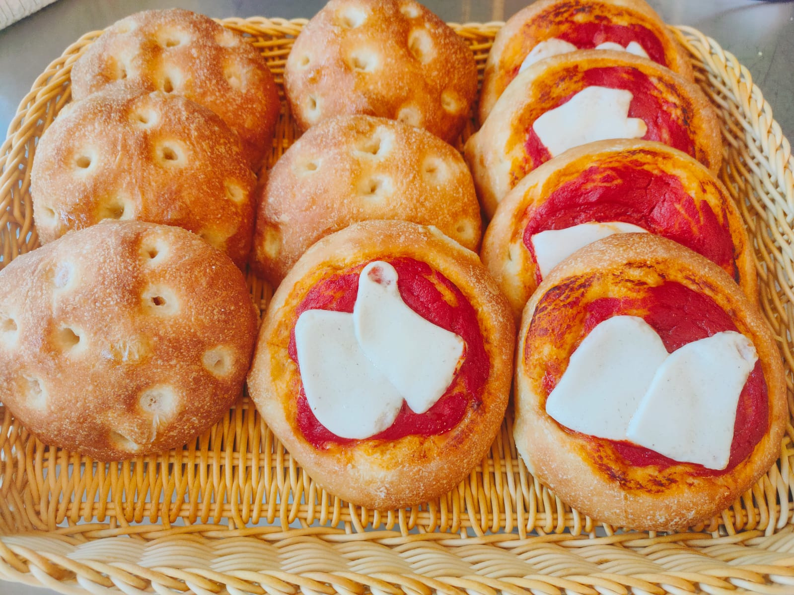

Gastronomia
Piatti preparati artigianalmente, ingredienti di stagione e un menù che cambia ogni settimana.
Scopri il menù della settimanaLa nostra cucina
Ogni settimana prepariamo una selezione diversa di primi, secondi, contorni, piatti unici, prodotti da forno e dolci. Cuciniamo in piccoli lotti, privilegiando ingredienti di stagione e ricette sempre nuove, così da offrirti sempre qualcosa di diverso.
Alcune delle nostre preparazioni
Dalle focaccine appena sfornate ai piatti pronti, ogni preparazione nasce da ingredienti selezionati e da una cucina fatta con cura.


Menù aggiornato ogni settimana
Le nostre preparazioni cambiano seguendo la stagionalità e gli ingredienti disponibili. Scopri il menù della settimana oppure prenota il tuo pasto direttamente su WhatsApp.